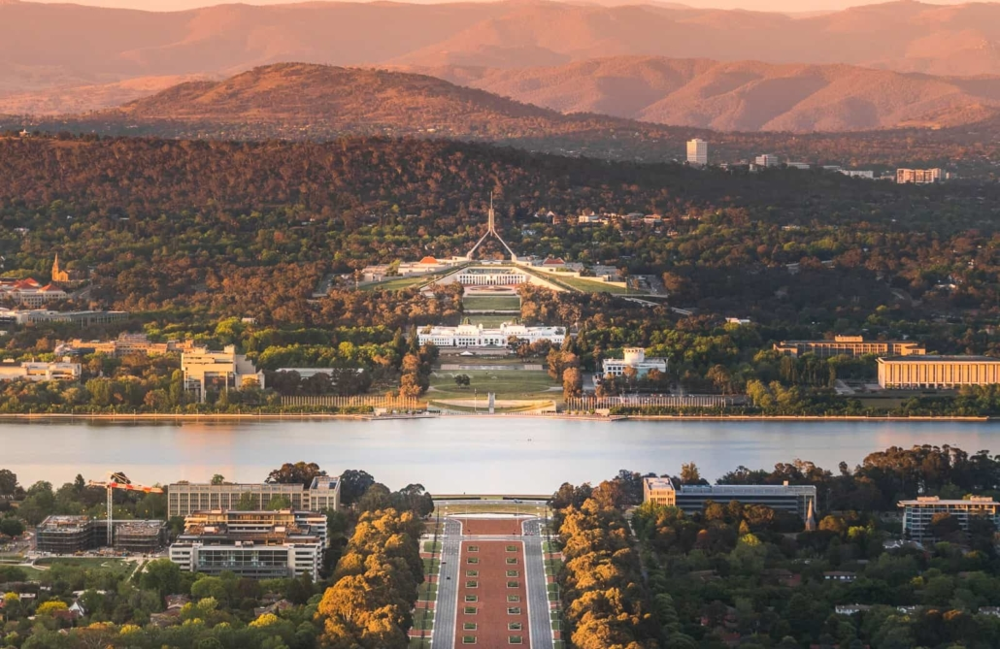
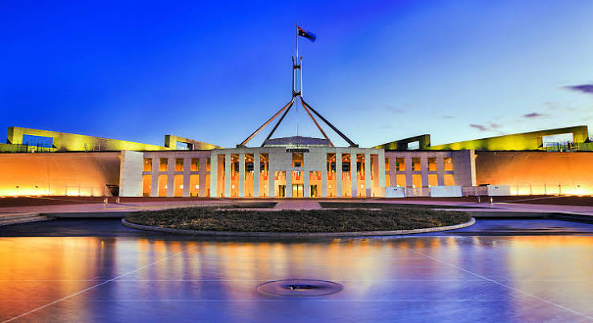

Welcome to Canberra



Canberra (/ˈkænbrə/ ⓘ KAN-brə; Ngunawal: Kanbarra) is the capital city of Australia and the largest population centre in the Australian Capital Territory. With an estimated population of 484,630 as of 2025, Canberra is Australia's largest inland city and the eighth-largest Australian city by population. The city occupies most of the northern quadrant of the Australian Capital Territory, and its urban sprawl borders the state of New South Wales to the northwest, northeast and southeast. The Brindabellas are located south and west of the city, and form the northern part of the Australian Alps, the country's highest mountain range.
Canberra was established following the federation of the Australian colonies to serve as the seat of government for the new nation, being a compromise between Sydney and Melbourne, Australia’s two largest cities. The area chosen for the capital had been inhabited by Aboriginal Australians for up to 21,000 years, by groups including the Ngunnawal and Ngambri. European settlement commenced in the first half of the 19th century, evidenced by surviving landmarks such as St John's Anglican Church and Blundells Cottage. On 1 January 1901, federation of the colonies of Australia was achieved. The capital city was founded and formally named as Canberra in 1913. Unusual among Australian cities, it is an entirely planned city, grounded in a design by American architects Walter Burley Griffin and Marion Mahony Griffin. The Griffins' plan was influenced by the garden city movement and featured geometric motifs aligned with significant topographical landmarks such as Black Mountain, Mount Ainslie, Capital Hill and City Hill. Its design can be viewed from its highest point at the Telstra Tower and the summit of Mount Ainslie. Other notable features include the National Arboretum and Lake Burley Griffin.
As the seat of the Government of Australia, Canberra is home to many important institutions of the federal government, national monuments and museums. These include Parliament House, Government House, the High Court building and the headquarters of numerous government agencies. Social and cultural institutions of national significance include the Australian War Memorial, the Australian National University, the Royal Australian Mint, the Australian Institute of Sport, the National Gallery, the National Museum and the National Library. The city is home to many important institutions of the Australian Defence Force including the Royal Military College Duntroon and the Australian Defence Force Academy. It hosts all foreign embassies in Australia as well as regional headquarters of many international organisations, not-for-profit groups, lobbying groups and professional associations.
Canberra has been ranked among the world's best cities to live in and visit. Compared to the national averages, the unemployment rate is lower and the average income higher; tertiary education levels are higher, while the population is younger. At the 2021 Census, 28.7% of Canberra's inhabitants were reported as having been born overseas. The Australian Public Service accounted for about 25% all jobs as at November 2025. Other major industries include health care, professional services, education and training, retail, accommodation and food, and construction. Annual cultural events include Floriade, the largest flower festival in the Southern Hemisphere, the Enlighten Festival, Skyfire, the National Multicultural Festival and Summernats. Canberra's main sporting venues are Canberra Stadium and Manuka Oval. The city is served with domestic and international flights at Canberra Airport, while interstate train and coach services depart from Canberra railway station and the Jolimont Centre respectively. City Interchange and Alinga Street station form the hub of Canberra's bus and light rail transport network.
This is second division name san.
War Memorial
Parliament House
Contact Page